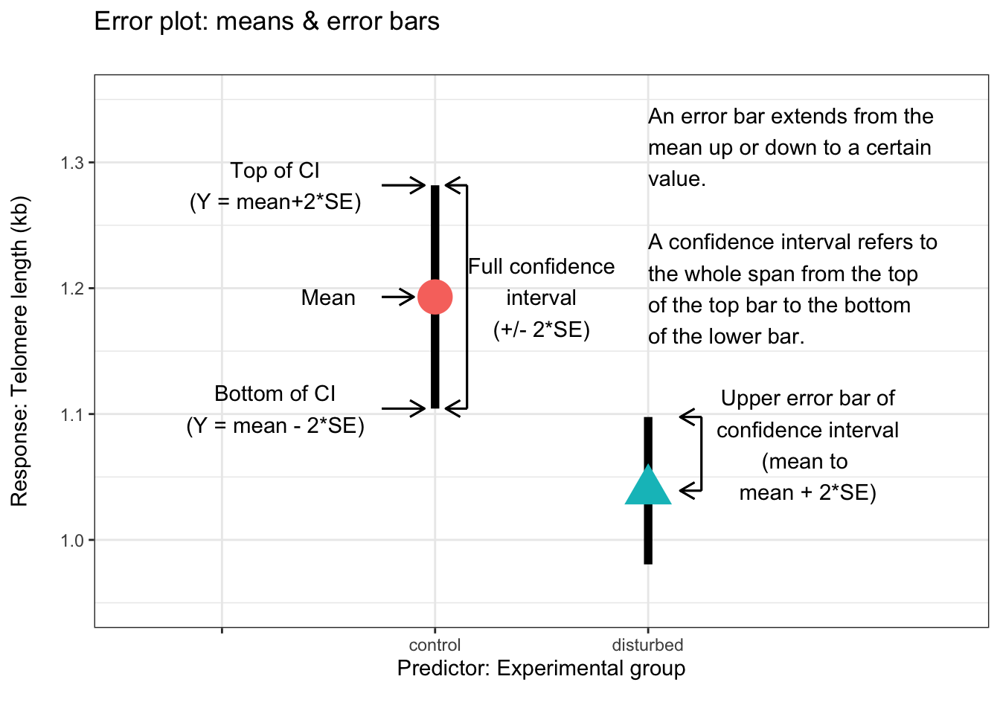

# This script makes example of different kinds of plots using the telomere data
# of Meillere et al 2015.
# Prep stuff
## libraries
library(ggpubr)## Loading required package: ggplot2library(cowplot)##
## Attaching package: 'cowplot'## The following object is masked from 'package:ggpubr':
##
## get_legendlibrary(dplyr)##
## Attaching package: 'dplyr'## The following objects are masked from 'package:stats':
##
## filter, lag## The following objects are masked from 'package:base':
##
## intersect, setdiff, setequal, unionlibrary(docxtractr)
library(plotrix) # for std.err
file.url <- "https://royalsocietypublishing.org/action/downloadSupplement?doi=10.1098%2Frsbl.2015.0559&file=rsbl20150559supp1.docx"
### Works with the URL too
file.docx <- docxtractr::read_docx(file.url)
docx.table.list <- docxtractr::docx_extract_all_tbls(docx = file.docx)
## Call each table from list
### nestlings
parus_telos_nest <- docx.table.list[[1]]
# clean up data
parus_telos_nest$cort <- as.numeric(parus_telos_nest$cort)## Warning: NAs introduced by coercionparus_telos_nest$telomere.length <- as.numeric(parus_telos_nest$telomere.length)
parus_telos_nest$Group <- with(parus_telos_nest,
paste(treatment,sex))
parus_telos_nest$Group <- gsub("control","Control",parus_telos_nest$Group)
parus_telos_nest$Group <- gsub("disturbed","Noise exposure",parus_telos_nest$Group)
parus_telos_nest$Group <- gsub(" F","\nFemales",parus_telos_nest$Group)
parus_telos_nest$Group <- gsub(" M","\nMales",parus_telos_nest$Group)
parus_telos_nest$cort.log <- log(parus_telos_nest$cort)
parus_telos_nest$telomere.length.log <- log(parus_telos_nest$telomere.length)
names(parus_telos_nest) <- gsub("treatment",
"Treatment",
names(parus_telos_nest))
names(parus_telos_nest) <- gsub("sex",
"Sex",
names(parus_telos_nest))
## Re-code data
dat.focal.cols <- parus_telos_nest[,c("Treatment","Sex","telomere.length","cort")]
dat.foc.cols.rnd <- dat.focal.cols
dat.foc.cols.rnd$telomere.length <- dat.foc.cols.rnd$telomere.length %>% round(1)
dat.foc.cols.rnd <- dat.foc.cols.rnd %>% dplyr::arrange(Treatment,telomere.length)
An error bar represents variation around a mean value or uncertainty we have in our estimate of the mean. Variation is represented by the standard deviation (SD) and characterizes just variation in the raw data. Uncertainty in the estimate is represented by the standard error (SE) or a 95% confidence interval (95% CI).
When we refer to “an error bar” we usually are referring to a single bar extending either above or below the mean. When we refer to a confidence interval we are referring to both bars. A confidence interval is the full span from the top of the upper error bar to the bottom of the lower bar. There is therefore a subtle difference between referring to error bars from standard deviations or standard error and the 95% confidence.
One thing to remember is that the bars shown in an error plot or barplot are completely different than those in a boxplot. Its useful to remember that the full name of a boxplot is a “box and whisker plot”. The bars extending above the boxes in a boxplot are not error bars. The top of the upper “whisker” goes up to the maximum value of the data (except when there are outliers); the bottom of the lower whisker goes down to the minimum value (except when there are outliers). These whiskers span upper and lower quartiles and are meant to capture aspects of the distribution of the data.
Data are from Meillere et al 2015. Traffic noise exposure affects telomere length in nestling house sparrows. Proceedings of the Royal Society B. 11: 20150559 https://doi.org/10.1098/rsbl.2015.0559